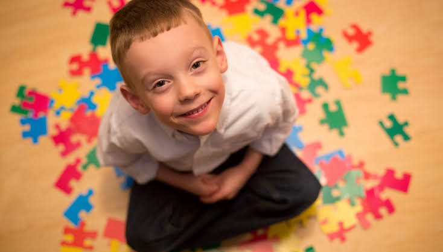
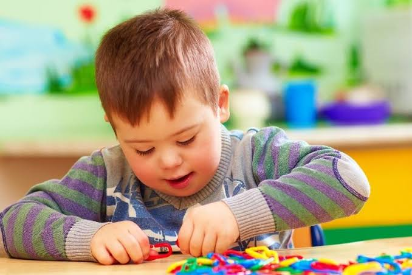
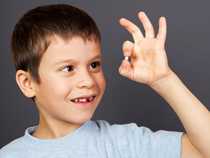
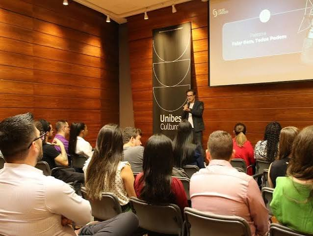
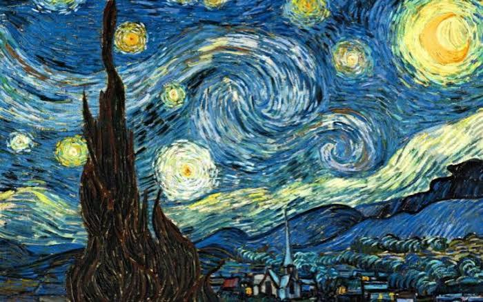

Nossos Serviços
No Instituto Espaço Vida, acreditamos que cada pessoa possui necessidades, potencialidades e formas próprias de aprender, se expressar e se desenvolver.
Por isso, oferecemos uma rede de atendimentos multidisciplinares que reúne diferentes áreas profissionais em um trabalho integrado, humanizado e voltado para o desenvolvimento e a qualidade de vida.
Psicologia
O atendimento psicológico do Instituto Espaço Vida oferece um espaço de acolhimento, escuta e acompanhamento individualizado, respeitando as características, necessidades e particularidades de cada pessoa.
O trabalho busca contribuir para o desenvolvimento emocional, fortalecimento da autoestima, autonomia, relações interpessoais e bem-estar. Cada atendimento é conduzido de maneira humanizada, considerando não apenas o indivíduo, mas também o contexto familiar e social no qual ele está inserido.

Psicopedagogia
A psicopedagogia trabalha aspectos relacionados ao processo de aprendizagem e ao desenvolvimento de habilidades, buscando compreender as particularidades de cada indivíduo e suas diferentes formas de aprender.
Através de estratégias personalizadas e atividades adequadas às necessidades de cada pessoa, o atendimento procura favorecer a aprendizagem, a autonomia e a confiança. O acompanhamento também pode envolver orientações para familiares e profissionais que fazem parte da rotina do atendido.

Nutrição
O atendimento nutricional busca promover uma relação mais saudável com a alimentação, levando em consideração as necessidades individuais, a rotina e as características de cada pessoa.
A orientação é realizada de forma individualizada, contribuindo para a construção de hábitos alimentares adequados e para a promoção da saúde. O acompanhamento nutricional também considera as particularidades relacionadas ao desenvolvimento e à qualidade de vida.

Projeto de Voz
O Projeto de Voz oferece atividades direcionadas ao desenvolvimento da comunicação e da expressão, valorizando a capacidade de cada pessoa de se comunicar e participar ativamente de diferentes situações do cotidiano.
O trabalho busca estimular a expressão, a comunicação e a confiança, utilizando estratégias adequadas às necessidades de cada atendido e favorecendo sua participação nas relações familiares, sociais e educacionais.

Terapia Aquática e Física
A terapia aquática e física utiliza o movimento como ferramenta para estimular o desenvolvimento motor, a coordenação, o equilíbrio, a força e a funcionalidade.
As atividades são planejadas considerando as necessidades individuais de cada pessoa, utilizando o ambiente aquático e diferentes exercícios como recursos terapêuticos. O objetivo é favorecer maior independência, segurança nos movimentos e qualidade de vida.

Arteterapia
A arteterapia utiliza diferentes formas de expressão artística como ferramentas para estimular a criatividade, comunicação e desenvolvimento pessoal.
Desenho, pintura, música, atividades manuais e outras possibilidades podem ser utilizadas de acordo com os interesses e as necessidades de cada pessoa. O objetivo é proporcionar um espaço de expressão, descoberta e interação, valorizando o potencial criativo de cada atendido.

Fisioterapia
A fisioterapia atua na promoção da mobilidade, funcionalidade e independência, considerando as necessidades específicas de cada pessoa.
Os atendimentos são planejados individualmente e podem utilizar exercícios e atividades terapêuticas para estimular força, equilíbrio, coordenação, mobilidade e outras habilidades. O trabalho busca favorecer a autonomia nas atividades do cotidiano e contribuir para uma melhor qualidade de vida.
Hidroterapia
A hidroterapia utiliza o ambiente aquático como recurso terapêutico para proporcionar movimento, fortalecimento e estímulos que podem ser realizados de maneira diferenciada dentro da água.
O trabalho é adaptado às características e necessidades de cada pessoa, utilizando as propriedades da água como apoio para exercícios e atividades terapêuticas. Dessa forma, busca contribuir para a funcionalidade, mobilidade, segurança e qualidade de vida.
Cuidar é olhar para cada pessoa por inteiro.
Nossa equipe multidisciplinar trabalha de forma integrada para proporcionar acolhimento, desenvolvimento, autonomia e inclusão.